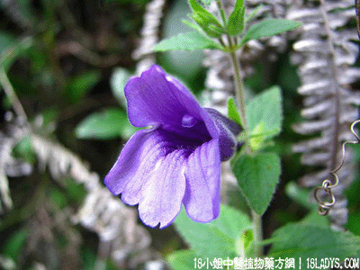

植物名：毛麝香。
生长环境：本品为一年生、直立、粗壮草本。生于山地灌木丛中，或草丛中。
入药部分：全草。
采集期：夏、秋。
自采地点：山岗。
性味：性温、味甘辛、气芳香。
功能：祛风消肿、止痛。
主治、用量和用法：1、山岚瘴气、水土不服：干用1至2两，清水煎服；2、风寒腹痛：生用5钱至1两，清水煎服；3、皮肤痕痒：适量煎水，洗患处；4、跌打，配伍用。
验方：（治跌打验方）毛麝香5钱、金牛根5钱、金耳环1钱、金钮头5钱、血见愁5钱、清水三碗，煎成一碗，热服。
（方解）本方之毛麝香祛风消肿，金牛根、金耳环散瘀、行气、止痛，金钮头破瘀，血见愁去瘀而生新血。此方用于积瘀疼痛者，功效甚好。
（方解）跌打积瘀伤处疼，毛麝香并金牛根，钮头戴上金耳环，见愁去瘀好生新。
参考资料：《广东中医》（1961年第3期）新洲医院介绍草药治疗麻风神经及应疼痛30例，均收立即止痛之效。处方：毛麝香、鸡血藤、吊风根，虎环根（后两药之潮汕山区土名）水四碗，煎城一碗，温服，每天服两剂，上下午分服。
(本文解释权归中药大全所有,如需转载请注明出处)